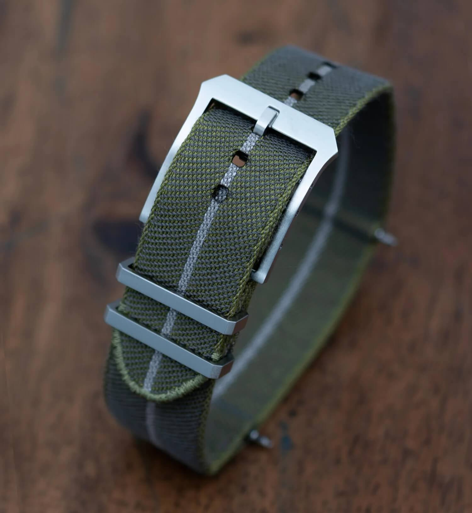
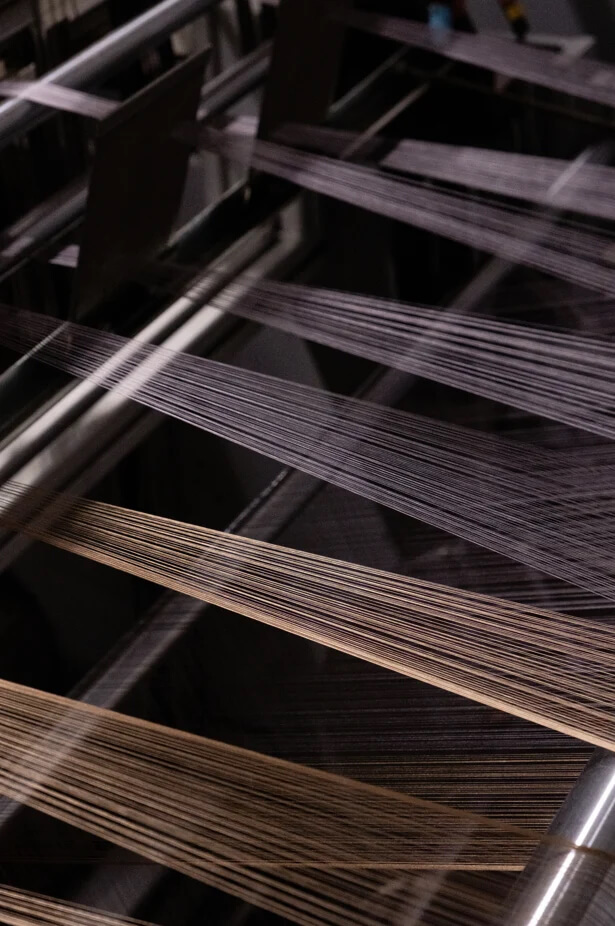
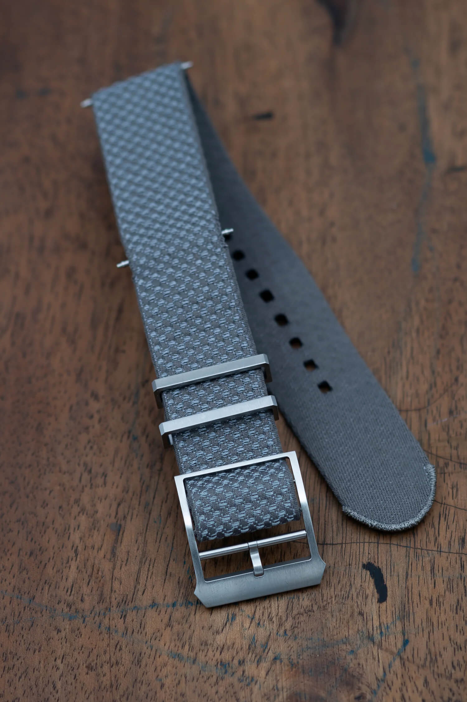

Julien Faure Now Sells Woven Straps Directly to Consumers
Julien Faure, the French weaving house that produced the woven fabric straps for Tudor and later for Bremont, has begun selling watch straps directly through own website. The collection currently lists 47 strap designs, all Jacquard-woven and made in France, priced at €120 each. They come in 20mm and 22mm, and they are in stock and shipping now.
 Nenad Pantelic • August 3, 2026
Nenad Pantelic • August 3, 2026

These are single-pass straps woven on shuttle looms in the company's workshops in Saint-Just-Saint-Rambert, in the Loire region. Until now, the only practical way to own one was to buy a watch that shipped with it, or to pay secondary-market prices for a Tudor fabric strap. That has changed.
Here is why it matters, and what the straps actually are.
Who Is Julien Faure?
Most of us met the company without knowing it, in 2014, when Tudor released the Ranger. The watch shipped with a second strap: fabric, in camouflage, and Tudor was very keen to point out that the camo was not printed onto nylon. It was woven into the cloth itself.
That strap became one of Tudor's calling cards, and it came from a family workshop in a quiet village near Lyon, in France's historic ribbon-making region. Hodinkee visited the factory in 2017 and found fifth-generation owner Julien Faure running looms, some of them dating from the 19th and early 20th centuries.
Bremont used them later. But watches are a small part of the story. The same workshop has woven ribbon for Chanel, Lanvin and Christian Louboutin, and company's archives document work for the Catholic Church, including liturgical vestments for the Vatican, plus a number of American universities around the turn of the 20th century. The company has been at it since 1864.
In the 1980s it became the first ribbon maker in the world to build custom software for programming Jacquard looms, and that software is now sold internationally. That is the detail I keep coming back to: a century-old wooden loom with a retro-fitted computer bolted on top, weaving complex patterns.

Why This Is A Good News
The first is availability. Forty-seven references in many great colors is a very different proposition from hoping a Tudor strap shows up on a forum at a sane price.
The second is rarer. This level of manufacture does not exist anymore. A vertically integrated house that owns the looms, writes own weaving software, holds 160 years of pattern archives, and weaves the fabric in France is a true outlier. When a company like that decides to sell direct rather than only supplying brands who mark it up threefold, we should probably encourage the behaviour.
Also, the reputation is not built around hype. Search around about Tudor's fabric straps and you get an unusual level of agreement: they break in beautifully, the edges do not fray, the colors do not fade, and they feel noticeably denser and better finished than a standard NATO.
The Straps
These are single-pass straps with an adjustable buckle, woven one-piece with woven, uncut selvedges (tail ends of a strap). That means the edges are finished by the weaving process rather than cut and heat-sealed.
The material is high-tenacity polyester webbing at roughly 500 warp threads, described by the company as a compact technical weave with tactical-grade rigidity. It is hydrophobic and quick-drying, and rated for chlorinated and salt water without color bleed or transfer from perspiration. Hardware is 316L stainless throughout: buckle plus two keepers, one fixed and one floating.
The patterns run from armoured bands to braids to single and double stripes, under names like Onyx, Eclipse, Pine Tree, Riviera, Sand Dune and Garnet. All of them are woven into the fabric. The designs have physical relief you can feel with a finger instead of a flat printed surface that eventually rubs away.
They also ship with integrated spring bars, removable if you would rather use your own.

Here are the specs:
| Brand | Julien Faure |
| Material | High-tenacity polyester webbing, Jacquard-woven |
| Weave density | Compact technical weave, approx. 500 warp threads |
| Construction | One-piece shuttle-loom weaving, woven uncut selvedges |
| Attachment system | Integrated spring bars, removable |
| Width | 20mm and 22mm |
| Compatibility | Most cases from 44mm to 48mm lug-to-lug |
| Buckle | 316L stainless steel; two keepers (one fixed, one floating) |
| Care | Machine washable at 20°C; hydrophobic, chlorine and salt water resistant |
| Origin | Made in France |
| Price | €120 including tax |
Sizing And Fit
Only 20mm and 22mm for now. That covers a lot of ground, but it leaves 19mm, 21mm and 18mm owners out. The split across the catalogue is close to even, 23 references in 20mm and 24 in 22mm. A 21mm option would open up a lot of modern watches, and I hope it comes.
The compatibility note is the one to read twice: these are mostly cut for cases between 44mm and 48mm lug-to-lug. Pass-through straps are always fussy about this, since the fabric has to clear the caseback and still leave a usable tail. If your watch sits well outside that window, ask before ordering.
Wrap-Up
A 160-year-old French weaving house that supplies Chanel and once dressed the Vatican is now selling watch straps under their own name, at a price below what the brands charged for the same fabric. The full collection is live on the Julien Faure website, and every reference I looked at was in stock.
I haven't ordered yet. I have a 22mm slot open and a shortlist down to three colors, so that won't last for much longer.